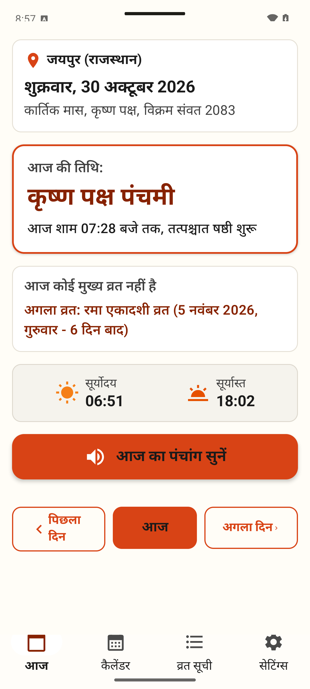
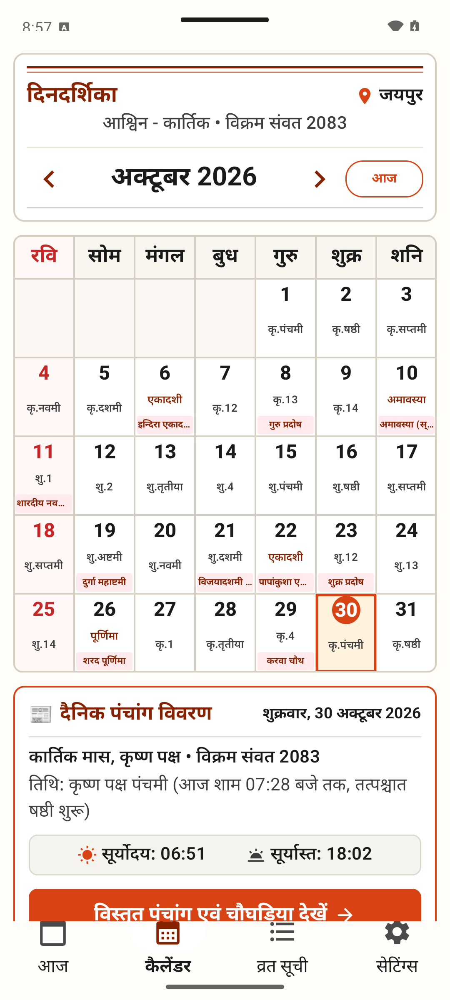
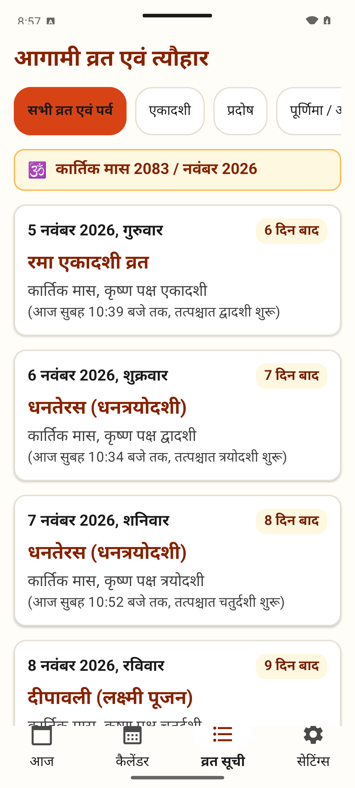
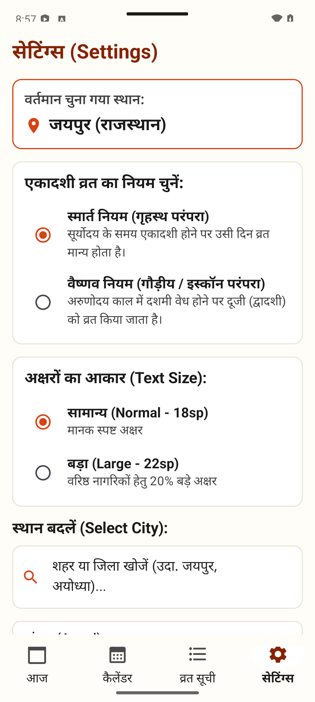

Vedic Wisdom, Pure Serenity.
The Ad-Free Hindu Calendar.
दैनिक पंचांग — उदया तिथि, शुभ मुहूर्त, चौघड़िया एवं व्रत। पूर्णतः ऑफ़लाइन व विज्ञापन-मुक्त।
Engineered with Jean Meeus planetary algorithms and Chitrapaksha Lahiri Ayanamsa. Experience effortless daily Panchang with 1-tap voice narration, real-time Choghadiya, and senior-friendly high-contrast typography across 11 Indian regional languages—with zero internet, zero data collection, and zero ads.
Designed for Dignity, Reverence & Ease
Every screen was purposefully crafted for elders: large readable typography, 48–56 dp touch targets, subtle tactile feedback, and absolute zero video popups during prayer.

01 — Today's Panchang & Choghadiya
One-Tap Voice Narration (बोलकर पंचांग)
Tap the audio button during morning prayer. Android's built-in speech engine reads today's Tithi, Paksha, Nakshatra, and Muhurat aloud so elders don't need to strain their eyes.
Astronomically Exact Udaya Tithi
Vedic religious observances require the Tithi prevailing at local sunrise. We compute solar refraction precisely for each of India's 788 districts using Jean Meeus algorithms.
Day & Night Choghadiya Slots
Color-coded slots for Amrit, Shubh, and Labh (Auspicious), alongside explicit warnings for Rahu Kaal and Yamaganda so you never miss an auspicious moment.
Pre-Loaded District Coordinates
No GPS permission required. Easily select your home district once, and all astronomical calculations run 100% offline with zero data consumption.
Complete App Gallery
All 4 Core SectionsDaily Panchang
Udaya Tithi, Nakshatra, Yoga, Sunrise, Sunset & Choghadiya.

Monthly Calendar
Classic Sunday-first newspaper grid with visual tithi badges.

Vrats & Festivals
90-day upcoming fasts with Ekadashi, Pradosh & Purnima filters.

District Settings
788 Indian districts, large font scaling, and 11 languages.
Why Elders Struggle with Standard Calendar Apps
Commercial calendar apps bombard users with accidental clicks, video ads during morning prayer, and tiny illegible text. We built the antidote.
| Feature & Experience | Typical Calendar Apps | Dainik Panchang |
|---|---|---|
| Full-Screen Ads & Popups | ✕ Invasive video popups during Puja | ✓ 100% Ad-Free Forever |
| Internet Connection | Requires constant 4G/Wi-Fi to load | ✓ 100% Offline (Zero mobile data) |
| Senior Legibility & Contrast | Tiny 11sp text, poor contrast, cluttered tables | ✓ WCAG AAA Contrast (≥ 7:1) + Large Font Mode |
| Audio Voice Narration | None (Elders must strain eyes to read) | ✓ 1-Tap TTS Voice Narration in 11 Languages |
| Location & Battery Privacy | Constant GPS polling & ad telemetry SDKs | ✓ Zero GPS Polling (788+ Districts Pre-loaded) |
| Astronomical Accuracy | Static approximated calendar tables | ✓ Jean Meeus Solar/Lunar Algorithm & Lahiri Ayanamsa |
Architectural Excellence
6 Pillars of EngineeringAstronomical Rigor
Meeus apparent solar and lunar positions, Chitrapaksha Lahiri Ayanamsa, and atmospheric refraction precise to the minute for every location.
Senior Accessibility First
Strict WCAG 2.2 AAA contrast ratio (≥ 7:1), 48–56 dp touch targets, dynamic typography scaling (+22%), and tactile haptic feedback.
One-Tap Voice Narration
Listen to today's Tithi, Nakshatra, and Shubh Muhurat during morning Puja without needing to wear reading glasses or navigate complex tables.
11 Regional Languages
Native translations and regional scripts for Hindi, English, Bengali, Marathi, Telugu, Tamil, Gujarati, Urdu, Kannada, Malayalam, and Punjabi.
Muhurat & Choghadiya
Complete day and night Choghadiya tables with clear auspicious (Amrit, Shubh, Labh) and cautionary periods (Rahu Kaal, Yamaganda).
100% Private & Battery Light
Built with Jetpack Compose & Room SQLite. Zero network requests, zero telemetry, and zero battery-draining background tracking.
In the Language of Your Heart
Dainik Panchang honors India's cultural and linguistic depth. Every Tithi, Paksha, fast, and Choghadiya is localized into 11 regional languages with one-tap switching.
Frequently Asked Questions
Does Dainik Panchang require an active internet connection? ▼
No. Dainik Panchang is 100% offline. The complete astronomical computation engine (Jean Meeus algorithm and Lahiri Ayanamsa) and coordinates for 788+ Indian districts are packaged directly inside the app. Once installed, it works in flights, remote villages, and temples with zero internet connection.
Is the app completely free with zero advertisements? ▼
Yes! There are no full-screen popups, no interstitial video ads, and no banner advertisements cluttering your morning prayer or daily rituals. We believe spiritual and cultural utilities should bring serenity, not ad fatigue.
How does the voice narration (बोलकर पंचांग) feature work? ▼
Tapping the audio speaker icon on the Today screen activates Android's built-in Text-to-Speech (TTS) engine. The app reads aloud today's Tithi, Paksha, Nakshatra, and key Muhurats in your selected language, making it ideal for elderly family members who prefer listening over straining their eyes.
What is Udaya Tithi and why is it important for fasts (Vrats)? ▼
In Vedic traditions (Surya Siddhanta and Dharma Shastra), the Tithi prevailing at the exact moment of local Sunrise is considered the "Udaya Tithi" and governs religious fasts (Vrats), festivals, and auspicious ceremonies for that civil day. Dainik Panchang calculates sunrise with exact atmospheric refraction to determine the authentic Udaya Tithi.
Can I adjust the text size for my elderly parents? ▼
Yes. Inside the Settings tab, you can toggle between "Normal" and "Large" typography scaling (+22% larger font size). In addition, the interface fully honors Android's system font and display accessibility scaling with strict WCAG 2.2 AAA contrast (greater than 7:1 ratio).
Does Dainik Panchang collect or share my personal data? ▼
Zero data collection. The app does not request internet permissions, does not track GPS, does not require an account, and includes no analytics SDKs. All calculations and district coordinates are processed entirely on your local device.
Bring Clarity to Your Daily Puja Rituals
आज ही डाउनलोड करें और बिना किसी विज्ञापन के दैनिक पंचांग का अनुभव लें।
Compatible with Android 8.0 and above. Completely private, offline-first, and senior-friendly.
studio.anvik.dainikpanchang
•
Version 1.4.0
•
Size: < 8 MB
•
Android 8.0+